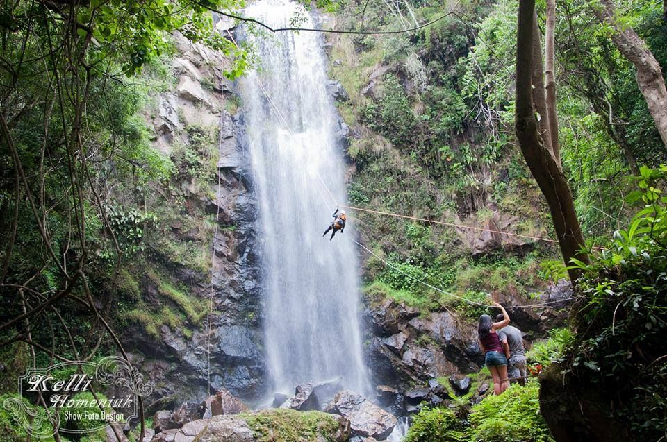

Detalhes do Roteiro
Canyon do Guartela Aventura: O Canyon do Guartelá, localizado no município de Tibagi, no Paraná, é um dos destinos mais incríveis para quem gosta de ecoturismo e aventura! Ele faz parte do Parque Estadual do Guartelá e é conhecido pelas suas formações rochosas impressionantes, pelas trilhas e pelo contato intenso com a natureza da região.
É um canyon brasileiro situado no planalto dos Campos Gerais, entre os municípios de Castro e Tibagi, no Paraná. É considerado um dos maiores canyons do mundo, (6° maior do mundo, e o maior do Brasil) com 32 Km de comprimento e altitudes que variam de 700 a 1.200 m.
Translado ida e volta saindo de Morretes e Curitiba;
1 noite de hospedagem com café da manhã;
Guias e condutores qualificados;
Visita a Cachoeira Puxa Nervo (com ingresso);
Visita a Cachoeira Salto Santa Rosa; (com ingresso);
Despesas extras em geral, que não estejam mencionadas no descritivo.
1° dia – Saída de Curitiba, Canyon do guartela, mirante, panelões, rafting e hospedagem;
2° dia – Rapel puxa nervo, visita Salto Santa Rosa, Cavalgada tropeira, tirolesa e retorno.
Valores diferenciados para grupos;
Saída de Curitiba, sendo do hotel ou região central;
No roteiro temos opção de banhos de rios e cachoeiras, panelões e piscinas naturais;
Passeio indicado e acessível a todas as idades;
As atividades opcionais terão que ser decididas e contratadas antes da viagem.
Vestes - calça ou bermuda para caminhada, roupas e toalha para banho de cachoeiras, caso tempo bom, agasalho e jaqueta caso esteja frio;
Calçados – Calçado fechado, preferência calçado impermeável, sem preferência de marca, desde que se sinta se confortável ao caminhar em terrenos arenosos. Chinelos para melhor comodidade após os passeios e atividades;
Alimentação – No passeio já estará incluído um almoço no restaurante da Pousada, as demais refeições podem ser adquiridas no roteiro ou levar lanches e petiscos de sua preferência para os passeios. Dicas caso prefira prepara sua alimentação, sugerimos sanduíches naturais sob sua preferência de cardápio (enrolar em papel alumínio). Água com mínimo 1 litro; suco, barrinhas de cereal, castanha nozes entre outros que seja propício e seja rico em nutrientes.
Utilidades - Mochila com tamanho mínimo de 15 litros, Repelente de insetos, bloqueador solar, Máquina fotográfica;
Tarifas
| N° de pessoas | Guia bilíngue | Adulto | Criança |
|---|---|---|---|
| 2 a 10 | Não | R$ 2.550.00 | R$ 1.900.00 |
| 2 a 10 | Sim | R$ 2.700.00 | R$ 2.400.00 |
Galeria de Fotos
